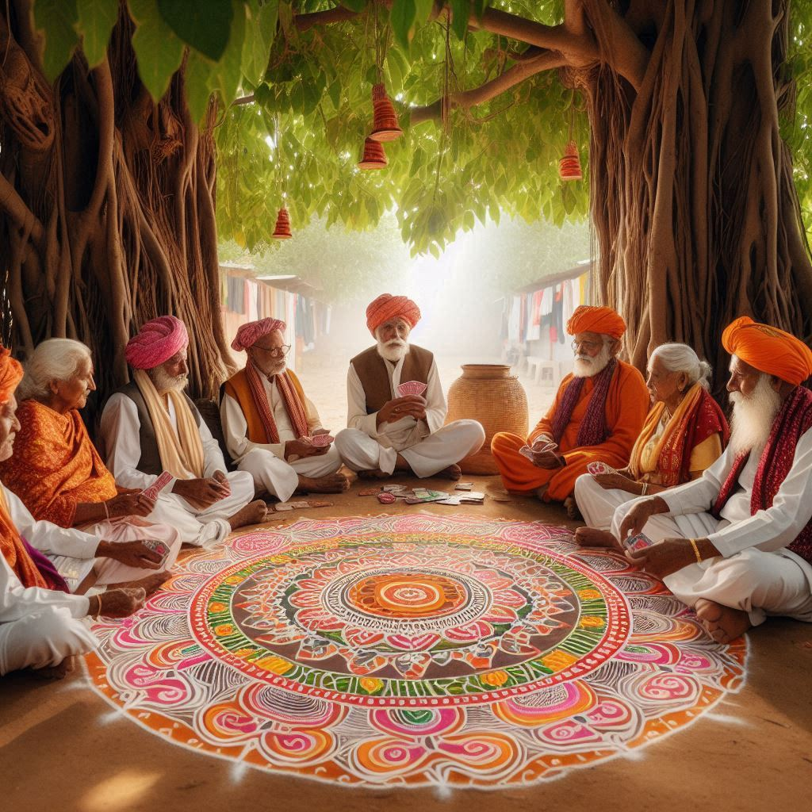
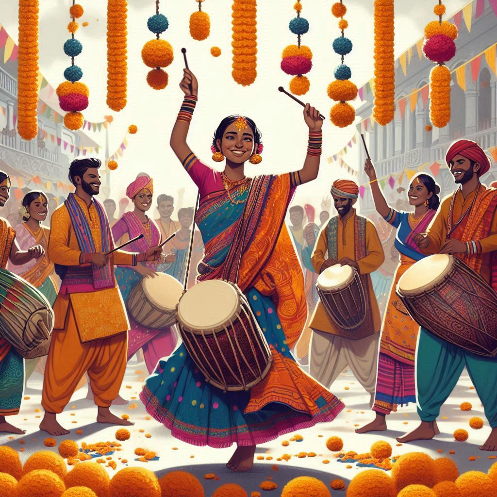

Bihar has a rich cultural heritage shaped by its diverse traditions, customs, and practices. The state is home to various ethnic communities, each contributing unique elements to its cultural landscape. Here’s an overview of the traditional practices and customs that define Bihar:
1. Festivals
Bihar celebrates a myriad of festivals, reflecting the state's cultural and religious diversity:
- Chhath Puja: One of the most significant festivals in Bihar, dedicated to the Sun God (Surya) and Chhathi Maiya. Devotees perform rituals at riverbanks, including fasting, singing, and offering prayers.
- Makar Sankranti: Marked by the harvest season, this festival involves kite flying and enjoying traditional sweets made from sesame seeds and jaggery.
- Holi: The festival of colors is celebrated with enthusiasm, featuring vibrant celebrations, music, and traditional sweets.
- Diwali: The festival of lights is celebrated with the lighting of lamps, decorating homes, and sharing sweets.
2. Art and Craft
Bihar has a rich tradition of handicrafts and artisanal work:
- Madhubani Paintings: Originating from the Mithila region, these intricate paintings depict mythological themes, nature, and everyday life, using vibrant colors and detailed patterns.
- Sikki Grass Crafts: Crafts made from sikki grass are famous in Bihar, including baskets, mats, and decorative items.
- Stone Carving: The state is known for its stone carving, particularly in the regions surrounding Rajgir and Nalanda.
3. Dance and Music
Bihar has a vibrant tradition of dance and music that varies by region:
- Bihar's Folk Dances: Traditional dances like Bidesia, Jat-Jatin, and Lori depict rural life and celebrate agricultural festivals. They often involve storytelling and vibrant costumes.
- Folk Music: The folk music of Bihar is diverse, with various genres reflecting local culture, including Bhojpuri songs, Maithili folk songs, and Nagpuri music.


4. Cuisine
Bihar's traditional cuisine is an essential part of its culture:
- Litti Chokha: A signature dish made of wheat balls stuffed with sattu (roasted gram flour) and served with mashed vegetables.
- Sattu: Roasted gram flour is a staple ingredient used in various dishes, including parathas and drinks.
- Festive Foods: Special dishes are prepared during festivals, such as Thekua for Chhath and Kheer for various celebrations.
5. Clothing
Traditional clothing in Bihar varies by region and community:
- Women: Women typically wear sarees, often in vibrant colors, with the Mithila style being particularly notable. In rural areas, women may wear churidars and salwar-kameez.
- Men: Men often wear dhoti and kurta, especially during festivals and cultural events. In urban areas, western-style clothing is also common.
6. Rituals and Customs
Bihar's traditions are deeply rooted in social customs and rituals:
- Marriage Customs: Bihari weddings are elaborate, often lasting several days, and involve numerous rituals, including Kanyadaan (giving away the bride) and Saat Phere (seven rounds around the sacred fire).
- Respect for Elders: Respecting elders is a significant aspect of Bihari culture, reflected in the customs and language used in familial interactions.
Conclusion
Bihar's traditions are a vibrant blend of various cultural influences, showcasing the state's historical richness and diversity. These traditions are preserved through festivals, art, cuisine, and social customs, making Bihar a unique and culturally significant part of India. The state's efforts to promote and celebrate its traditions contribute to its identity and the pride of its people.